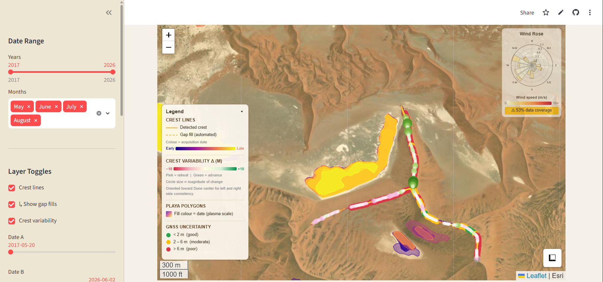

Remote sensing, MSc thesis, 2026
Moving star dunes in Namibia
Found dune crestlines in Sentinel-2 images with Python and mapped how they move over time, including uncertain or missing data.
Python, Sentinel-2, Streamlit
Open dashboard